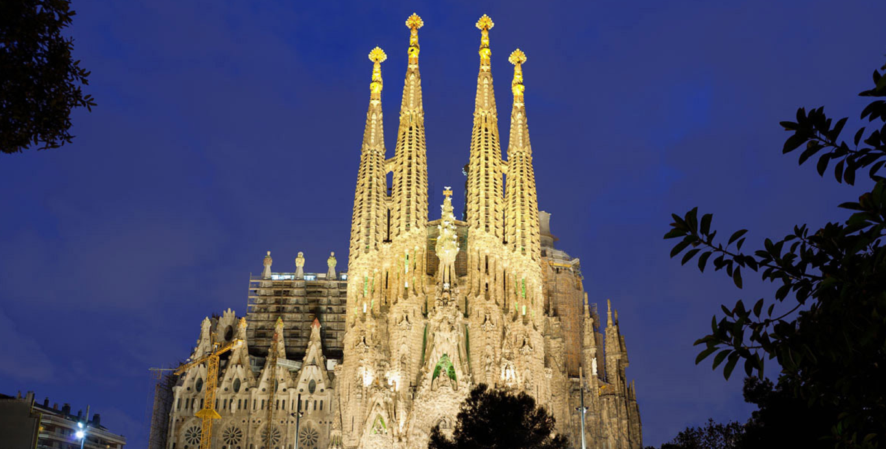

SAGRADA ⓕ
ⓐ
ⓜ
ⓘ
ⓛ
ⓘ
ⓐ

☰
La Sagrada Familia es el monumento más famoso de Barcelona, se encuentra en su centro,
y es una maravilla arquitectónica que ofrece vistas de la ciudad desde sus ocho altísimas agujas.
Esta enorme basílica fue diseñada por el arquitecto Antoni Gaudí. Dado el carácter ambicioso de su diseño,
la basílica sigue en construcción y no se espera verla finalizada hasta casi 2026. El proyecto se inició en 1882
y Gaudí se hizo cargo de él un año después, dedicando los últimos años de su vida a este edificio,
falleció antes de poder verlo terminado.
El diseño de Gaudí aúna los estilos arquitectónicos modernista y gótico. El exterior de la iglesia lo conforman torres,
agujas y prolijas fachadas. Muchos la comparan con un intrincado castillo de arena.
Por dentro, sus coloridas columnas se ramifican como las ramas de las copas de los árboles.
En la iglesia hay dos tiendas de recuerdos en las que puedes comprar souvenirs de la obra de Gaudí.
La misa diaria se realiza en catalán y castellano.
La Sagrada Familia fue declarada Patrimonio de la Humanidad por la UNESCO,
además, fue una de las candidatas para las nuevas siete maravillas del mundo moderno.